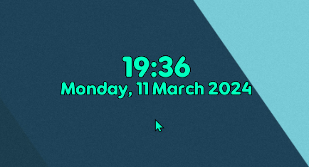
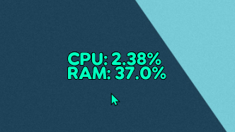
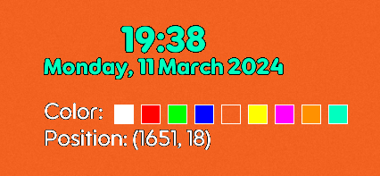

1. Digital clock widget 2. CPU utilization widget 3. RAM usage widget 4. Widget control panel: By pressing LShift + LCtrl a quick control panel appers under every widget that allows you do edit its position by dragging it with the mouse and edit its color



Bugs:
1. Black screen: When you set the app to automaticaly start with windows there is a possibility for the screen to turn black with only the widgets visible, also this happens if you click on top
of the widget. To fix just click somewhere in the screen.